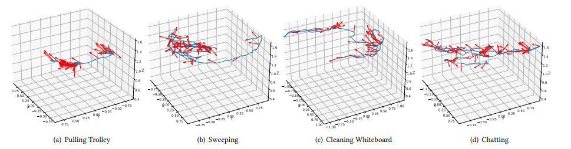
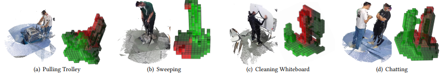
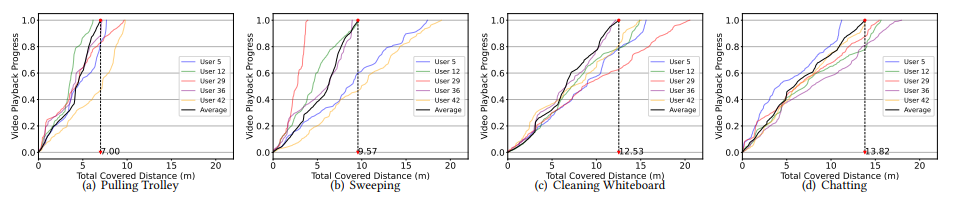

Some interesting findings and visualizations based on the dataset:

visualization of user's Gaze Direction with Movement Trajectory.The blue line represents the movement trajectory and the red arrows indicate the gaze direction.

Proposed Volumetric ROI (region of interest) of four different scenes. Here the light green color indicates a higher ROI level and the dark red color indicates a lower ROI level.

The Total Movement Distance of different scenes. Here the colored line and the black line indicate each user’s total movement distance and the average respectively along the video playback progress, the dotted line with a number represents the average value.